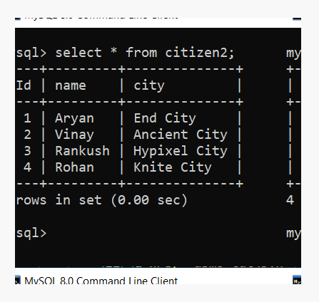
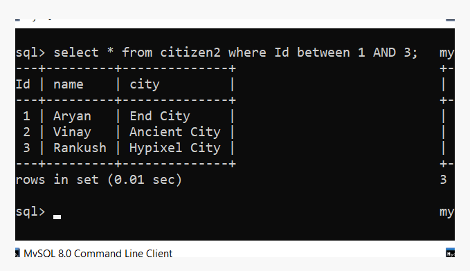

MySQL BETWEEN
The MYSQL BETWEEN condition specifies how to retrieve values from an expression within a specific range. It is used with SELECT, INSERT, UPDATE and DELETE statement.
Syntax: expression BETWEEN value1 AND value2;
Consider we have a citizen table :
Execute the following query:
select * from citizen2 where Id between 1 AND 3;
Output :
Let's move on to Unique Key in MySQL
Share this page on :
© 2022 AnalyzeCode.com All rights reserved.